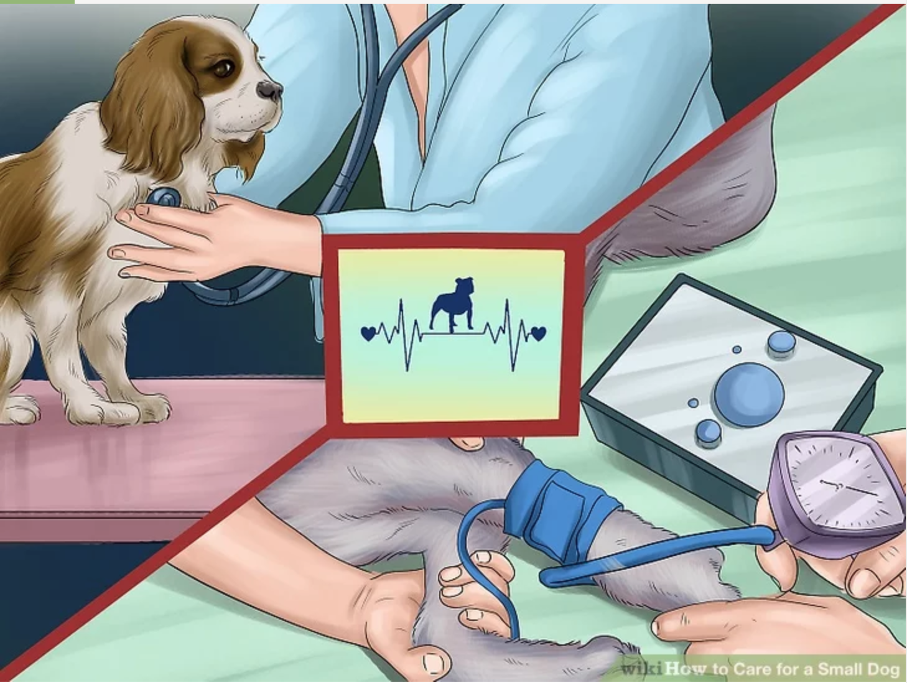
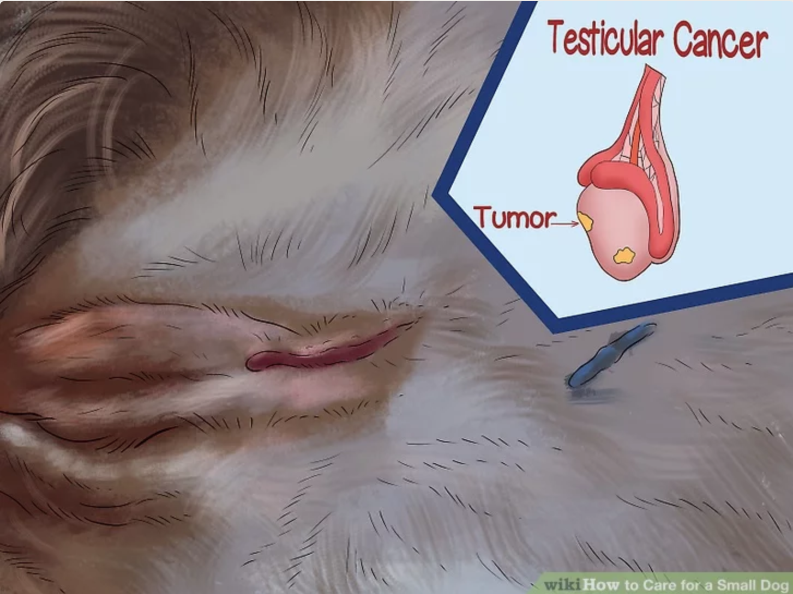
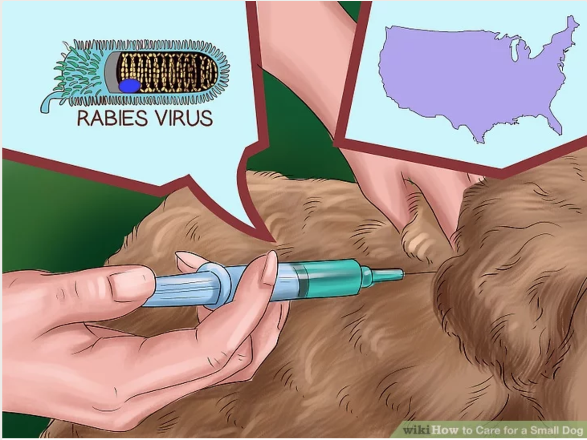
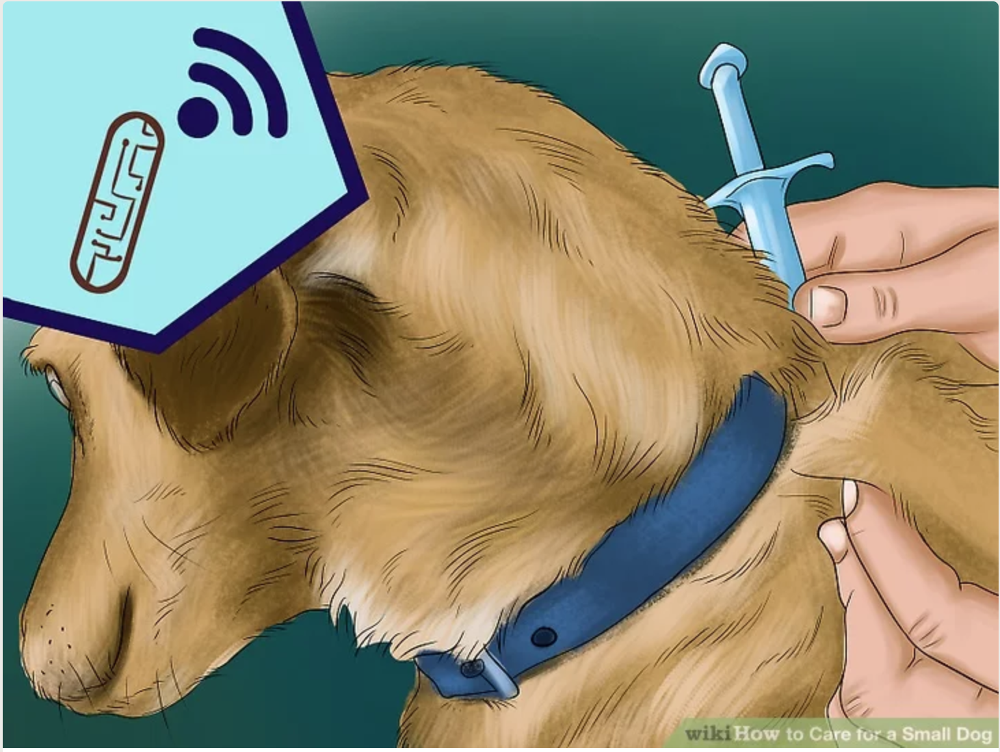

Like humans, dogs need routine medical care to stay healthy. Different small breeds are at higher or lower risks for certain conditions than other breeds.
- Veterinarians will do a full physical on your dog and monitor changes in their weight, heart beat, blood pressure and more.
- Small dogs tend to be more fragile and easily hurt than larger dogs. Small dogs are at a higher risk for fractures and concussions because their bones are much smaller than large dogs. They can be easily hurt by rough play by children, are at risk of being stepped on, and may misjudge distances when jumping off stairs and furniture.

Unless you are planning to breed your dog, neutering or spaying your dog has health benefits and can improve temperament. On average, dogs that are spayed or neutered live up to two year longer than dogs that have not undergone these procedures.
- Spaying or neutering your dog can also help lessen aggression, especially in males./li>
- Dogs that are spayed or neutered are also at a lower risk of developing certain diseases, like uterine and testicular cancers.

Your veterinarian will administer vaccinations to your dog, and the number of vaccinations that your dog needs will depend on their age and the area that you live in.
- Depending on where you live, there may be additional vaccination requirements for your dog. For instance, most states in the United States require dogs to be vaccinated for rabies.
- Do not let your young puppy interact with other dogs until they have received all of their vaccinations.

An ID microchip contains your identification information as the dog’s owner and stores this information in a database. They can be very helpful, especially if your dog is lost or stolen.
- Microchips are very small and are implanted either behind a dog’s shoulders or the scruff of their neck. Your veterinarian can implant the chip during a health checkup.